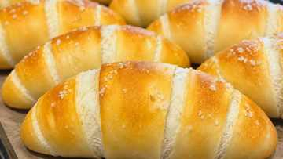

焼きたてパン工房 GALLOは、三重県津市白塚町にあるパン店。公式発信では、北海道産小麦100％・無添加生地へのこだわりが案内されています。
焼きたてのパンを、毎日の楽しみに
公開情報ではテイクアウトのお店として案内されています。商品や焼き上がり、営業状況は変わる場合があるため、来店前は店舗の最新発信を確認しておくと安心です。

商品を紹介する本文画像。実際の販売内容は店舗の最新情報をご確認ください。
来店前に確認したいこと
住所三重県津市白塚町
営業情報来店前に公式発信で最新情報を確認
特徴北海道産小麦100％・無添加生地（公式発信）
このあと、どうする？
津市でほかの「食べる」を見る近くの候補へ
白塚周辺をもう少し見るエリアから探す
響に相談する目的に合う場所を一緒に探す
※本記事の掲載画像には、AIにより生成・合成したイメージ画像を含みます。実際の商品・店舗・施設・景観等とは異なる場合があります。
気になるパンを見つけたら、焼き上がりや営業状況を確認してから立ち寄ると、選ぶ時間まで楽しめそうです。